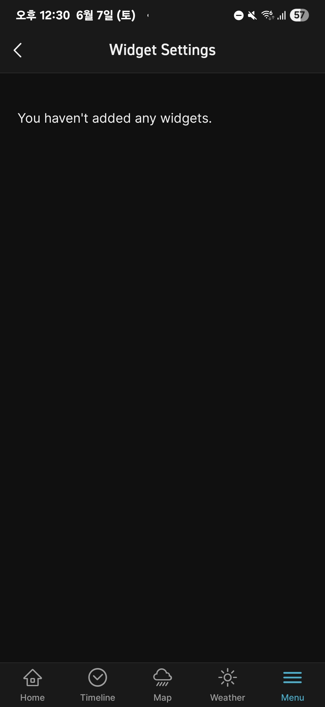
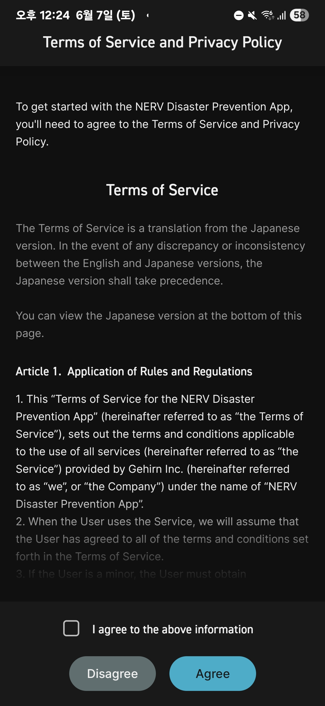
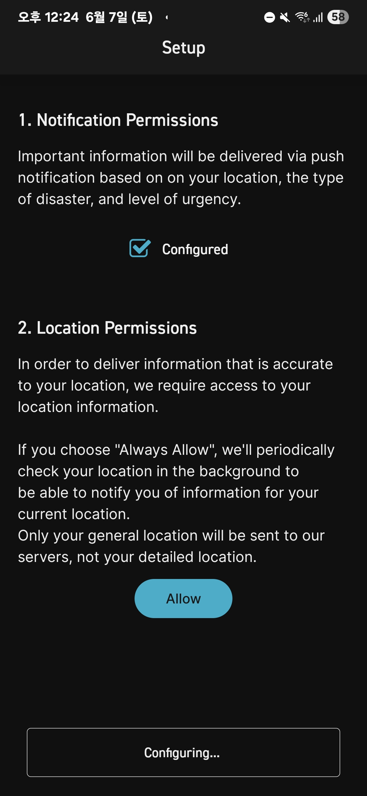
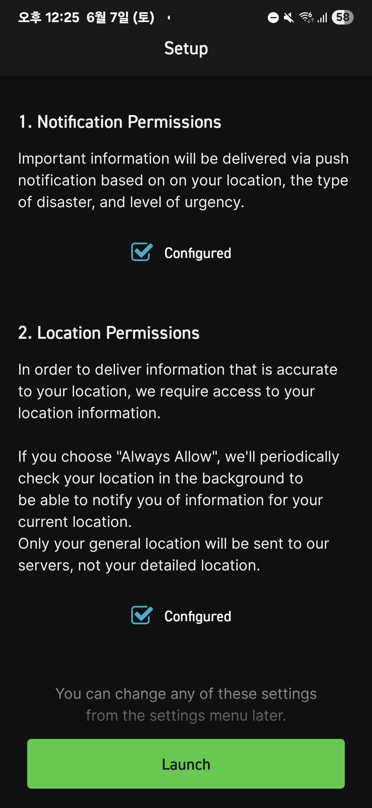

01. 메인 레이아웃
지진, 기상, 해일 등 재난을 격자형 그리드로 묶고 위계에 맞춰 선명하게 배치합니다.
2024 Workshop
안전디딤돌을 비롯한 재난안전 앱과 해외 사례를 워크샵에서 함께 탐색하며, 경보·지도·행동요령이 시민의 다음 판단으로 이어지는지 진단했습니다.

Workshop Question
참가자들은 재난안전 앱을 직접 살펴보며 정보가 어디에 배치되는지, 경보 이후 행동 안내가 얼마나 구체적인지, 대피소와 준비물 정보가 시민의 상황에 맞게 연결되는지 확인했습니다.
Case Analysis
워크숍 참가자들이 정성 분석한 NERV, 오사카 방재 앱, Safety Tips의 실제 화면들입니다. 이미지 클릭 시 원본을 볼 수 있습니다.

지진, 기상, 해일 등 재난을 격자형 그리드로 묶고 위계에 맞춰 선명하게 배치합니다.

현재 기상 상황 및 특정 구역의 위험 등급을 레벨별 고대비 색상으로 뚜렷하게 시각화합니다.

적색맹, 녹색맹 등 색상 구별이 어려운 사용자를 위해 다양한 접근성 배색 테마를 탑재했습니다.

강수량, 산사태 위험도 등 지리 정보 데이터 레이어를 지도 위에 선명하게 겹쳐서 전달합니다.
UX Comparison Matrix
워크숍 분석 대상이었던 주요 재난 정보 서비스들의 접근성 및 기능별 정량·정성 분석 비교표입니다.
| 평가 차원 (Dimension) | 일본 NERV App | 일본 오사카 방재 앱 | 일본 Safety Tips (관광청) | 국내 안전디딤돌 앱 (행안부) |
|---|---|---|---|---|
| 색각 이상 대응 (CUD) | 우수 (Good) 색각 배색 테마 커스텀 가능, 선명한 고대비 인터페이스 제공 |
보통 (Moderate) 일부 테마에서 대비가 지원되나 범용 옵션은 부재 |
보통 (Moderate) 기본적인 대비 디자인은 적용되었으나 고대비 테마 없음 |
미흡 (Poor) 색상만으로 위험도 표현, 색각이상자 구분 곤란 |
| 무장애 경로 안내 (Barrier-Free) | 미흡 (Poor) 공간 및 기상 실시간 시각화 강점이나 경로 약자 필터 없음 |
우수 (Good) 휠체어 경사로, 유무단차, 장애인 엘리베이터 여부 지도 필터링 연동 |
미흡 (Poor) 대피소 지도가 없거나 다국어 텍스트 매뉴얼에 치중 |
미흡 (Poor) 대피소 주소와 수용인원만 나열, 접근 조건 누락 |
| 상황별 구체적 행동 지침 | 우수 (Good) 실시간 GPS 위치 및 위험도 매칭형 긴급 팁 동적 연계 |
보통 (Moderate) 기본 방재 카드 가이드 제공, 대피 우선순위 텍스트 매뉴얼 |
우수 (Good) 일러스트 카드를 사용하여 직관적으로 대피 지침 교육 제공 |
보통 (Moderate) 방대한 행동요령이 있으나 텍스트가 매우 길어 긴급 상황 가독성 저하 |
| 다국어 지원 수준 (외국인) | 보통 (Moderate) 영어 및 일본어 지원 중심. 일본 내 외국인 거주자용 |
보통 (Moderate) 한·영·중·일 등 주요 4개 국어 지원 위주 |
우수 (Good) 한국어, 영어, 베트남어 등 14개 국어로 기상 비보 번역 전달 |
미흡 (Poor) 재난문자는 한국어 위주 송출, 외국인용 앱 분리(Emergency Ready)로 인지도 저조 |
알림은 빠르게 도착하지만, 사용자가 지금 해야 할 행동과 확인해야 할 장소가 이어지지 않으면 판단이 멈춥니다.
위치 표시는 유용하지만, 접근 가능한 입구와 운영 여부, 현장 표지, 대피 경로가 함께 있어야 실제 이동으로 이어집니다.
외국인, 장애인, 영유아 동반자, 지병이 있는 사람은 같은 재난에서도 필요한 안내와 데이터가 다릅니다.
Output
이 워크샵은 이후 재난정보 수요자 분류, 재난가방 워크샵, 대피소 데이터 항목 제안으로 이어지는 출발점이 되었습니다. 공개 페이지에서는 원본 작업자료 대신 UX 진단 관점과 사례 이미지만 정리합니다.